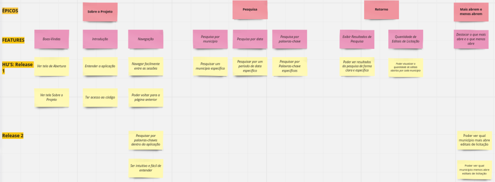

Criação do User Story Map
Histórico de Versões
| Data | Versão | Descrição | Autor |
|---|---|---|---|
| 07/10/2023 | 0.1 | Criação do User Story Map | Júlia Takaki |
Quadro das funcionalidades
Um User Story Map é uma ferramenta visual que ajuda a equipe a entender e planejar as funcionalidades de uma aplicação de maneira mais estruturada e centrada no usuário. Ele é particularmente útil no contexto de desenvolvimento ágil, como o Scrum. O quadro abaixo apresenta os principais conceitos envolvidos, como cards épicos, features e histórias de usuário (HU's).

Explicação do diagrama
Épico: Escolha do município
Feature: Seleção de Município
- Os usuários podem escolher o município do Estado do Ceará desejado.
História de Usuário (HU): Selecionar um Município
- Como um usuário, quero poder selecionar o município do Estado do Ceará que desejo para ver os editais de licitação relacionados a esse município.
Épico: Navegação e Pesquisa
Feature: Navegação por Categorias
- Os usuários podem navegar facilmente pelo Diário Oficial, usando categorias.
Feature: Navegação por Datas
- Os usuários podem navegar facilmente pelo Diário Oficial, usando datas.
Feature: Navegação por Palavras-chave
- Os usuários podem navegar facilmente pelo Diário Oficial, usando palavras-chave.
História de Usuário (HU): Pesquisar por Categoria
- Como um usuário, quero poder navegar pelo Diário Oficial, escolhendo uma categoria específica para encontrar editais de licitação relacionados a essa categoria.
História de Usuário (HU): Pesquisar por Data
- Como um usuário, quero poder navegar pelo Diário Oficial, escolhendo uma data específica para encontrar editais de licitação publicados nessa data.
História de Usuário (HU): Pesquisar por Palavras-chave
- Como um usuário, quero poder pesquisar no Diário Oficial usando palavras-chave relevantes para encontrar editais de licitação relacionados às minhas necessidades.
Épico: Retorno claro e específico
Feature: Exibir Resultados de Pesquisa
- O retorno da pesquisa deve ser claro e especificado para o usuário, mostrando a citação e a data em que a palavra-chave foi referenciada.
História de Usuário (HU): Exibir Resultados de Pesquisa
-Como um usuário, quero ver os resultados da minha pesquisa de forma clara e específica, incluindo a citação relevante e a data em que a palavra-chave foi referenciada.
Épico: Quantidade de editais de licitação
Feature: Análise de Quantidade de Editais por Município
- Os usuários podem analisar a quantidade de aberturas de editais de licitação por município em determinado período de tempo.
História de Usuário (HU): Ver Quantidade de Editais por Município
-Como um usuário, quero poder visualizar a quantidade de editais de licitação abertos por cada município do Estado do Ceará em um período de tempo específico.
Épico: Município que mais abre edital de licitação e os que menos abre
Feature: Destacar Municípios Principais e Menos Frequentes
- Os usuários podem ver facilmente qual município mais abre edital de licitação e qual é o que menos abre.
História de Usuário (HU): Visualizar Município que mais abre editais
- Como um usuário, quero poder ver qual município no Estado do Ceará mais frequentemente abre editais de licitação.
História de Usuário (HU): Visualizar Município que menos abre editais
- Como um usuário, quero poder ver qual município no Estado do Ceará menos frequentemente abre editais de licitação.